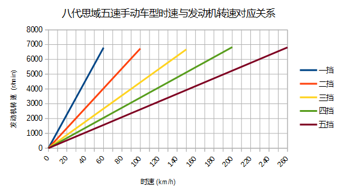

手动档驾驶技术基础
目录
手动档开了一年，根据自己的知识和经验，对手动档驾驶所需要用到的一些技术作一些总结，这些技术有些是我会的，有些是我不会只知道是怎么回事的，例如无离合换档和跟趾，都按照我的理解记录下来，以后随着自己经验的积累，再进行修改。
本文以我的车八代思域五速手动作为参考车型，对前置前驱的自然吸气手动档车型也一般性适用.
1 内燃机
1.1 奥托循环
现在主流的家用汽车发动机都是汽油发动机，所以本文所说的内燃机主要是指汽油发动机。家用汽车一般是四缸汽油发动机，豪华的有六缸、八缸乃至十缸发动机，而且现在三缸机也开始流行了，先来看一下发动机气缸的工作原理。
这是发动机气缸的截面图, 上半部分是燃烧室，油气混合物便在此空间内燃烧做功，燃烧室的底端是活塞，活塞可以在一定范围内上下滑动，活塞通过连杆与曲轴相连接，而曲轴与发动机飞轮的轴连接在一起，曲轴转动就可以带动飞轮转动，连杆可以把活塞的上下运动转换为曲轴的圆周运动。在燃烧室的上端，有两个气门，一个用来控制雾化后的汽油与空气的混合物进入燃烧室，叫进气门，一个用于排放燃烧后产生的废气，叫排气门，燃烧室的顶端装有火花塞，用来放电引燃油气混合物。

这是发动机的曲轴，两侧端子的中心连线是旋转轴，而四个气缸的连杆，则套在四个凸起的位置，连杆就像一个摇柄，带动曲轴转动，发动机的飞轮就连接在曲轴的外端。
在气缸内，活塞和连杆周期性的往复做功，每一个周期分为四个阶段。
第一阶段，曲轴在惯性作用下带动连杆转动，连杆带动活塞从上止点（活塞的上限位置）向下止点（活塞的下限位置）运动，同时进气门打开，排气门关闭，燃烧室气压降低，雾化后的汽油与空气的混合物通过进气门进入燃烧室，这个过程称为进气冲程。
第二阶段，活塞在连杆和曲轴惯性作用下由下止点向上止点运动，这时进气门和排气门都关闭，燃烧室内的油气混合物被压缩，温度升高，压强增大，这个过程称为压缩冲程。
第三阶段，活塞位于最顶点（上止点)的时候，燃烧室内的油气混合物处于被压缩状态，这时火花塞放电，引燃油气混合物，燃烧的油气混合物产生高温高压，推动活塞向下运动，并通过连杆转化为曲轴转动的动力，这个阶段称为做功冲程。
第四阶段，活塞在连杆和曲轴惯性作用下往上运动，同时进气门关闭排气门打开，将燃烧后的废气排放出去，这个过程称为排气冲程。
每个冲程里，发动机曲轴与飞轮都会转动半圈，所以四个冲程下来，正好转过两圈。
这四个阶段中，只有做功冲程会输出动力，其它三个冲程都是在惯性作用下完成，因此如果发动机只有一个气缸，那么动力的输出将是一段一段的，不能保证平顺性，而且发动机的震动不可避免，所以主流发动机都采用了多缸技术。对于四缸发动机来说，四个气缸在任何时刻，刚好四个气缸分别处于四个冲程并进行轮换(各缸点火顺序:1-3-4-2)，所以能够达到一个动态平衡从而保证动力输出的平顺并较好的抑制了发动机的震动，因此成为目前主流家用车的选择，当然六缸与八缸的动力平顺性与震动抑制情况会做得更好。而目前应用不久的三缸发动机，它的缺点是显而易见的，动力输出上，它行驶过程中有四分之一的时间里是没有动力输出的，而且它的震动会比较大，需要通过额外的技术来进行抑制，但始终难以达到四缸机的平顺性和震动抑制水平。
油气混合物在压缩冲程中，被压缩前后的体积之比是发动机的一个重要参数，称为 压缩比 ，家用汽车发动机的压缩比通常在10-12左右，如果压缩比较大，则油气混合物在被压缩后容易因为温度达到燃点而在未点火的情况下自发燃烧爆炸并干扰活塞的运动，这就是发动机爆燃爆震现象，压缩比高的发动机需要使用高标号汽油来避免爆燃爆震(因为高标号汽油搞爆震性更好)。
燃烧室的体积便是气缸的排量，对于多缸发动机来说，它的排量是各气缸排量之和。家用车自然吸发动机排量一般是 1.5L-2.5L 之间，涡轮增压车型由于有涡轮增强动力，所以排量可以适当降低， 1.0L 至 2.0L 之间较多。
1.2 自然吸气与涡轮增压
为了增强发动机的动力，可以让发动机气缸内吸入更多的油气混合物，这有两种思路，一是做大发动机的排量，这可以通过增大每个气缸的容积或者增加气缸数目甚至两者并用来实现，这发展出了大排量自然吸气发动机，六缸八缸乃至十二缸发动机，排量可以增大到 3.0L-6.0L 区间，另一个思路是让发动机吸入经过压缩后的油气混合物，这就是增压技术，主流的增压技术是涡轮增压和机械增压。
涡轮增压是飞机发动机下放到汽车发动机的一项技术，因为飞机在高空飞行，空气稀薄，压强较小，气缸内能够吸入的空气较少，燃烧产生的动力较弱，于是引入了涡轮，对空气进行压缩后再吸入气缸，使得在不扩大气缸燃烧室体积的情况下能够吸入更多的空气，从而燃烧更加充分，动力更强。
这是涡轮的实物图:
涡轮有一个涡轮和一个叶轮，两个轮子被安装在同一个轴上，只能同步转动，汽车行驶时，发动机排出的高温高压的废气推动涡轮旋转，从而带动叶轮旋转，而旋转的叶轮对要进入发动机的空气进行压缩，从而让气缸内一次吸入比直接吸气多出许多甚至好几倍的空气，以使燃烧时释放出更大的能量。
涡轮和叶轮的转速很高，发动机飞轮一般是每分钟几千转，但是涡轮能达到每分钟几十万转，高速旋转的机械装置需要更好的润滑，所以涡轮发动机对机油的要求较高，另外就是停车熄火后，涡轮可能由于转速太高，到完全停下尚需要一到两分钟时间，但是机油泵已经停止工作不再提供机油润滑，引起额外的损耗，所以通常涡轮车的说明手册会建议驾驶者在停车后，先怠速两分钟再熄火，因为怠速的时候，涡轮是不需要再继续工作的，它可以逐渐停下来。
相对涡轮增压而言，如果进入气缸的空气未经压缩，则称为自然吸气发动机，相同排量的涡轮增压发动机与自然吸气发动机比较而言，涡轮增压发动机能输出更大的动力，达到更大排量的自然吸气发动机的动力水平。而动力接近的涡轮增压和自然吸气发动机，前者油耗相对更低，所以涡轮增压目前在家用汽车市场逐渐普及。
但是涡轮增压也会带来一些问题，因为它是利用废气来推动涡轮转动的，所以当发动机转速较低时，废气的力量不足以推动涡轮，此时发动机与自然吸气发动机几乎等同，但是转速一上来之后，涡轮启动，压缩空气进入气缸，发动机会突然爆发出强烈的动力，从而造成车辆向前窜的现象，而发动机的转速上升有一个过程，所以实际的驾驶感受是，踩下油门，约等1-2秒，发动机才爆发出较强的动力，这便是涡轮迟滞现象。
为了让发动机吸入更多的空气，还有其它的增压方式，比如机械增压，它不是利用废气，而是直接用发动机附件皮带来带动运转，从而避免了涡轮迟滞的现象，但是也因此而使得发动机多了一些额外的负担。
1.3 扭矩与功率
扭矩与功率是刻画发动机性能的两个重要参数，例如八代思域搭配的1.8自吸发动机在6500转时输出最大功率103千瓦，而在4300转时输出最大扭矩175牛米，这一节就来讲清这个问题。
扭矩就是发动机曲轴转动的力矩，用 \(T\) 表示，力矩是一个物理量，在杠杆原理中，力矩是施加在杠杆端点并且方向垂直于杠杆的力的大小与力臂的乘积。举个简单的与力矩相关的例子，通用的螺丝扳手便是杠杆原理，为了能够扭动螺丝，直接用手拧是拧不动的，但是在扳手的帮助下，利用杠杆原理，通过伸长力臂来增大力矩，而螺丝端的力臂很短，因此受力更大，从而能够拧开。所以发动机扭矩简单的理解就是发动机曲轴转动的力矩大小。
功率也是一个物理量，表示做功的快慢，也就是在单位时间内所做的功的大小，用 \(P\) 来表示，它等于扭矩与曲轴角速度 \( \omega \) 的乘积，需要注意的是单位，因为发动机转速 \(n\) 通常用每分钟转动的圈数来表示(r/min)，而功率是用一秒内所做的功来计算的，这里我们把它的单位转换为千瓦(kw)，而曲轴角速度 \( \omega \) 用弧度每秒作单位，那么可以得出
\[ P = \omega T \times 10^{-3} = \frac{2\pi n}{60} \cdot T \times 10^{-3} \]
所以功率与扭矩和转速之积成正比，这一点非常关键，这是理解变速器的一把钥匙，变速器就是在发动机功率不变的情况下，通过齿轮组合，把发动机的扭矩和转速，调整转变为车轮的扭矩和转速(严格的说是在输入轴与输出轴间进行调节)。
经常听到说哪款发动机的最大功率是多少马力，马力是一个非标准的功率单位，有英制马力和公制马力之分，两者与标准功率单位都可以换算，但一般的车型参数都会同时用千瓦来标明功率，所以这里不再就马力作讨论了。
发动机的扭矩和功率并不是固定的，在不同的转速下输出的扭矩和功率是不一样的，把扭矩和功率随转速的变化绘制成曲线图，就是发动机特性曲线图，如下是本田1.8自吸发动机的曲线图:
绿线是扭矩曲线，红线是功率曲线，可以看到，在转速低于 2000r/min 时，扭矩还不到最大扭矩的一半，这就是俗称的低扭较差，也就是低转速扭矩较差，在到达4300r/min之前，扭矩随着转速的上升而增大，转速超过4300r/min之后扭矩下降，但因为转速在上升，所以功率仍然在增加，并在6500r/min时达到最大，之后功率下降。说明这款发动机偏向高转发力，在3000-6000转之间具有较好的扭矩和功率输出。
最大扭矩的对应转速会低于最大功率的转速，因为在发动机超过最大扭矩对应转速时，扭矩略微下降，但是转速仍然在上升，所以作为乘积的功率仍然在上升，只是上升得慢了而已。
涡轮增压发动机的特性曲线与自然吸气有明显的区别，下面是一个典型的涡轮增压发动机的曲线图:
同样绿线是扭矩曲线，红线是功率曲线，从这可以看出涡轮增压发动机一个明显特点，那就是低扭强劲并且最大扭矩持续区间宽泛，在转速区间 1500-4000r/min，扭矩都保持在最大扭矩附近，所以在低转速区间，涡轮增压发动机提速比自然吸气更直接，自然吸气发动机需要先把转速拉得比较高才能有较大的扭矩输出以便于加速。
需要注意的是，发动机的扭矩与车轮扭矩是两个概念，车辆要起步，需要的是较大的车轮扭矩，而如果要加速，则还同时需要较大的车轮转速，也就是要求较大的轮上功率，当然这必须要发动机功率足够才行。
发动机扭矩要通过变速器放大为轮上扭矩，轮上扭矩决定了车辆的加速度，也就是提速的快慢，而功率则决定了车辆的最大速度。如果发动机扭矩较差但是功率较大，那么可以通过设计变速器齿比来放大扭矩，较大的功率保证了在放大扭矩的同时也能保证不低的车轮转速，所以判断发动机的动力是否足够强，功率是最重要的参数，扭矩不足是可以通过变速器进行弥补的。
变速器的作用便是，在不改变发动机功率的情况下，通过调整轮上扭矩与车轮转速来改变车轮驱动力，例如在起步时，通过大齿比的齿轮组合，使车轮在低转速的情况下获得较大的扭矩，从而顺利的使车辆由静止变为运动状态，而在车子行驶过程中需要急加速时，通过大油门抬高发动机转速以获得较大的功率输出，同时通过降档利用大齿比齿轮组合使车轮获得较大的扭矩实现加速，这便是降档提速的理论依据。
2 变速器
汽油内燃机的特点是，它只在特定的转速区间才能发挥出最大的效率，通常是每分钟1000-7000转，但是汽车的轮胎不可能时刻都保持与发动机同步运转，等红绿灯的时候需要停车，泊车的时候还需要倒车，在需要临时停车的时候让发动机熄火不现实，而且发动机也不可能反向旋转来实现倒车，而在车辆前进时，在不同的工况下，例如起步、爬坡、加速等工况所需要的驱动力是不一样的，所以我们需要一个变速器来实现这些需求。
变速箱内部通常是一些齿轮的组合，通过不同大小的齿轮组咬合在一起来实现输入轴与输出轴的转速改变。
在车辆起步时，并不需要车轮转速有多快，需要的是车轮有较大的扭力，所以需要降低转速提升扭矩，这需要较大的齿比（即小齿轮带动大齿比，并且差别要较大），这便是变速箱的低档位，通过大齿比(主动轮与从动轮转速之比)来降低转速增大扭矩来失去车辆从静止到运动状态的转变。在车辆高速行驶时，车轮转速较高，而我们要保持发动机转速不能过高，所以需要较小的齿比，这便是变速箱的高档位。需要加速时，需要较大的扭矩以驱动车轮尽快提升时速，同时车轮转速也要提升，所以这就需要发动机抬升转速来输出更大的功率，同时用低档位来扩大扭矩，这便是降档提速。
最早的变速器是手动档变速器，它是通过一些咬合在一起的齿轮组合来实现发动机转速到轮胎转速的下降，通过空档来实现不熄火停车，在空档下，变速器内部齿轮不再咬合，从而发动机的动力不会传递到车轮，因此在停车的时候发动机可以保持运行不熄火（为了节约燃油，转速保持在怠速700r/min左右）。在倒车时，引入一个中间齿轮来改变输出轴的转动方向，使发动机不必反向旋转。
2.1 手动变速器与档位
变速箱是一套有几组齿轮的装置，有一个输入轴，有一个输出轴，有的变速箱还有一个中间轴，输入轴通过离合器与发动机飞轮相连接，输出轴通过差速器与车轮连接，变速箱的作用就是通过不同的齿轮组合来改变输入轴与输出轴的转速比，从而改变发动机转速与车速之比。
如图所示，变速箱内有几组咬合在一起的齿轮组，分别位于输入轴与输出轴上，位于输入轴上的称为主动轮，位于输出轴上的称为从动轮，主动轮与从动轮的转速之比称为这一齿轮组的齿比，每一个齿轮组就是一个档位，齿比大的齿轮组对应低档位，齿比小的齿轮组对应高档位。每一组齿轮在任何时候都是咬合在一起的，主动轮都是被固定在输入轴上的，但是从动轮都并没有直接固定在输出轴上，从动轮的中央空洞和输出轴之间有一个空隙，因而从动轮和输出轴是断开的，只在挂档操作的时候，换档拨叉会拨动同步器来填补这个空隙，同步器通过摩擦来使从动轮和输出轴转速趋同，同步器填入哪一组齿轮的从动轮空隙，哪一个档位便被使用。在行驶过程中，所有档位的主动轮都与输入轴同步转动(也就是所有档位主动轮转速相同)，也就带动所有档位的从动轮转动(转速各不相同)，但只有当前使用档位的从动轮通过同步器带动输出轴同步转动，而其它档位的从动轮都是在空转。这样输入轴就可以通过当前档位的齿轮组带动输出轴转动，实现动力的传递，而换档操作，就是在切换变速箱内的齿轮组。
这里提到了同步器，从动轮是没有被固定在输出轴上的(事实上也不可能几个从动轮同时被固定在输出轴上)，要通过同步器插进齿轮中央空洞与输出轴的空隙来实现连接，那么同步器选择哪一个从动轮进行连接便是档位的选择问题，变速箱通常是相邻两个齿轮组共用一个同步器，同步器向左推，就能使用左侧的齿轮组，同步器向右推，便能使用右侧的齿轮组，而同步器便是由驾驶员手中的换档拨杆所控制的，换档拨杆向前和向后拨动，便是推动某一个同步器分别向两边启用齿轮组，通常换档杆上同一个竖槽内的两个档位使用的是同一个同步器。
可以发现，如果只通过主动轮和从动轮，那么输入轴的转动方向一旦确定，那么输出轴便只能朝相反的方向转动，那么倒档又是如何实现的呢，很简单，在主动轮和从动轮之间插入一个专用齿轮，这样就可以实现改变输出轴的转动方向了。而空档，便是同步器都处于中间的空闲位置，所有从动轮都与输出轴脱离接触。
有些变速箱还有一个中间轴，实际上它就是把输入轴分成两截了，输入轴与中间轴之间通过一个固定齿比的齿轮组进行咬合，而且不可断开，这对齿轮组称为初级减速齿轮组，其齿比称为初级减速齿比，而各档位的主动齿轮都安装在中间轴上。
变速箱输出轴还有一个俗称尾牙的最终减速齿轮组与差速器相连，这也是一个固定不可断开的齿轮组，其齿比称为最终减速齿比。
发动机飞轮的转速，经过变速箱的多级齿轮组进行多次降速以后，动力才传递到车轮，由于功率是扭矩与转速的乘积，所以变速箱在降低了转速的同时，放大了扭矩，尤其是在起步的时候保证有足够大的扭矩以迫使轮胎起步，这对于车辆是极为重要的。
2.2 离合器与半联动
离合器位于发动机与变速箱之间，是用来切断和恢复发动机向变速箱传入动力的部件，它由离合器片、压盘、分离轴承组成，如图所示:
离合器片被固定在压盘的外侧边缘，分离轴承位于压盘中央的圆心空白处，车辆正常行驶时，离合器被紧紧压迫在发动机飞轮上，而离合压盘则与变速箱的输入轴连接，发动机飞轮与变速箱输入轴保持相同的转速转动，这样发动机的动力就被传递到变速箱输入轴了。当离合踏板踩下时，踏板通过离合总泵和分泵这样的液压助力机构，带动分离拨叉施加给分离轴承一个轴向的压力，压盘的盘片中央向发动机飞轮一侧靠近，从而被固定在压盘外侧边缘的离合器则远离发动机飞轮脱离接触，这样，发动机动力被断开，变速箱输入轴与发动机飞轮各自独立旋转，而当离合踏板被放开后，离合器重新与发动机飞轮紧密挤压在一起同步转动，发动机的动力又恢复传递到变速箱输入轴了。
离合器踏板从完全放松状态到踩到底，有一段距离，这就是踏板高度，这段距离中有一小段是离合器处于半结合状态，这称为半联动，在半联动状态下，离合片与发动机飞轮之间有转速差，离合片的转速低于发动机的转速，离合片与发动机飞轮之间存在滑动摩擦，因此与离合器相连的变速箱输入轴的转速低于发动机的转速，发动机的动力只有一部分被传递给了变速箱。这段离合行程位于踏板行程中间的某一位置，在踏板行程的首尾两段是自由行程，即从踏板踩到底开始，慢慢松离合，有一段行程是离合器完全断开的状态，然后从某个点开始，离合片开始与发动机飞轮接触，发动机飞轮开始带动离合片旋转，但存在离合片打滑的情况，踏板再继续抬起，则离合片与飞轮的接触更紧密，滑动摩擦减轻，离合片转速上升，与发动机飞轮的转速差减小，当踏板抬到某一个位置时，离合片完全与飞轮结合在一起，滑动摩擦消失，飞轮与离合片转速达到相同，此时半联动状态结束，再继续松踏板到完全放开，也没有什么变化了，所以这整个过程按照动力的传动比例来说，可能是这样一种情况: 0-0-0-0.4-0.5-0.6-1-1-1-1-1-1-1-1，动力传递系数位于0和1之间的就是半联动状态，这段半联动状态区间在整个踏板行程中只占据很小一段，所以它被称为离合器的结合点，也叫半联动点(实际上应该被称为结合区间或者半联动区间，只是这段区间很短而已)，松踏板的过程中，到达结合点之前，离合器处于完全断开的状态，过了结合点之后，处于完全结合的状态。这个结合区间的长度在不同的车型上有一定差异，大众捷达的离合半联动区间相对较长，好处是不容易熄火，对新手更友好(熄火的原因在后面讲解起步的地方会说明)，而本田思域的半联动区间则非常短，近乎是一个点，好处是换档果断干脆，不拖泥带水。
为什么需要断开发动机动力呢，是为了便于进行换档操作，所谓换档，就是切换变速箱中的齿轮组，在换档的过程中，变速箱输出轴与车轮相连，因而转速是近似恒定的，但是由于各齿轮组的齿比不同，所以要切换齿轮组，就必须要改变输入轴的转速，这就要靠同步器的摩擦来使得输入轴匹配到相应的转速，但是如果此时输入轴还同发动机飞轮连在一起，那么同步器便不能改变输入轴的转速，自然档位也就挂不进去，但是有了离合器，这个问题便好办了，踩下离合踏板，离合片与发动机飞轮脱离接触，那么发动机飞轮的动力便不会传递到变速箱输入轴，变速箱输入轴可以独立旋转，问题迎刃而解。因此正确的换档操作是，先踩下离合踏板，进行换档，然后松开离合踏板。
2.3 自动变速器
手动变速器的优点和缺点都是显而易见的，最大的优点是结构简单，所以成本较低，并且故障率极低易于维修，一般30-40万公里以后才有可能出现较大的问题，它的缺点是需要驾驶员手动完成换档操作，当然这是相对自动变速器而言的。
目前使用更广泛的是自动变速器，它不需要驾驶者手工干预档位，而是根据汽车厂商预先设置的程序逻辑自动判断升降档时机并完成换档操作，使得驾驶变得更加简单，但由于一种守恒定律的存在，操作简单化不可避免的会降低驾驶的灵活性，当它的升降档逻辑符合驾驶者的驾驶意图时，人们会觉得这是一款聪明的变速器，反之则会认为这款变速器显得比较笨，对于汽车厂商而言，它的换档逻辑设定只能按照大多数人在大部分路况下进行调教，不一定时时刻刻都能符合某个驾驶者的意图。举例来说，现在的汽车厂商为了降低车辆那么一丁点的油耗，会尽可能的使变速器处于高档位使得发动机维持在较低的转速，这样即便是油耗数据上下降不到5%的数据，也会由于其巨大的销量从而在国家相关部门那里取得一个不错的油耗积分，为了确实能使得变速器维持在较高的档位，它会积极的升档而不太愿意降档，以牺牲驾驶者的动力性能为代价来换取一丁点的油耗降低。
传统的自动变速器(AT)虽然也是使用齿轮组，但它的结构与手动变速器复杂得多，它是利用恒星行星齿轮组合来实现的，具体的原理比手动档复杂一些，而且也不是本文所要讨论的重点，读者感兴趣的话可以找一些动画演示的视频来观看。
手自一体变速器(AMT)具有类似于手动档变速器的齿轮结构，但增加了电控单元来实现换档，无需驾驶者手动操作。
日系品牌喜欢使用无级变速器(CVT)，这种变速器比较特殊，它是通过两个轮子中间连上一根皮带或者钢带，但这两个轮子的轮面上有一个V型的深槽，通过改变轮面两个夹层的距离来迫使钢带在不同的半径位置，从而改变传动比，由于这个钢带的半径位置可以连续改变，所以它的档位不是离散的档位，而是一个连续变化的区间，至于所提到的模拟七速是指将它的传动比变化区间分成七个小的子区间，把传动比处于传动比最大的子区间视为一档，而传动比最小的子区间则视为七档。CVT变速器最大的优点是平顺性，因为它的传动比是连续变化的。
时下比较流行双离合变速器(DCT或者DSG)，它与手动档变速器高度相似，但多了一组齿轮并且有两个离合片，假如当前正以三档行驶，那么它会把二档和四轮的齿轮也咬合上准备好，一旦需要换档的时候，只需要切换结合的离合器就可以了，所以双离合变速器的换档速度比较快，但也正因为其换档速度快，导致离合片结合时摩擦较大容易发热，为了解决这个问题，有些双离合让离合片浸泡在变速箱油液中以散热，这称为湿式双离合，反之则称为干式双离合。双离合变速器作为目前各厂家正在推广的一款变速器，其耐用性还有待时间检验。
自动档变速器由于没有手动档的离合器，为了能够能够切断发动机输出的动力，引入了液力变矩器，有了它，临时停车时可以保持D档位并踩住刹车，如果停车超过半分钟就不建议这样做了。
3 油离配合
油离配合就是油门踏板与离合踏板相互配合以完成车辆起步。在车辆起步前，发动机处于怠速状态，约 700-800r/min，保持低转速以节约燃油，如果转速低于500-600r/min，则发动机将熄火。
驾校的教练车通常在怠速状态下靠慢松离合就能完成起步和爬坡，但是家用车一般是做不到这一点的，怠速起步和爬坡基本上都会熄火，除非你离合松得极其缓慢，但那不现实也没必要。
为什么会熄火呢，因为在离合器一结合的瞬间，发动机有了载荷，从而转速下降，一旦低于 500-600r/min 就熄火了，所以为了避免熄火，需要在离合器结合时给一点油门抬升一下转速，这就是油离配合。
油离配合主要用于起步，起步又分平路起步和坡道起步，两者基本原理是一样的，只是坡道起步要防后溜所以油门要比平路上给得大一些。
3.1 平路起步
在平路上起步时，在空档并且发动机怠速状态下，踩下离合挂一档，然后慢抬离合，到快接近结合点时，右脚给油到至少 1500r/min 并稳住油门，然后离合再继续慢松，车辆动起步之后把离合器完全放掉，继续给油门加速，起步完成。
这个过程，给油门就是提升发动机输出功率和扭矩，用一档是因为这个档位能最大限度的降低车轮转速和放大扭矩，因为车辆起步时，车轮转速并不需要有多快，但是需要有较大的扭力，而一档是能最大程度的降低转速以及放大扭矩的，所以起步一般用一档，当然大多数情况下，二档也是可以起步的，只是为了防止熄火，油门需要更大一点同时离合松得慢一点而已。但是如果是在北方地区冰雪路面起步，用一档反而会因为过大的车轮扭矩而打滑，所以这时候可以用二档起步解决这个问题。
3.2 坡道起步
坡道起步与平路起步是类似的，不同点在于车辆停在坡道上容易后溜，需要克服车辆的重力沿着下坡方向上的分力所带来的阻力。
起步前处于空档怠速和手刹拉起状态，首先踩住刹车并释放手刹，踩下离合挂入一档，慢抬离合，当离合快要到结合点时，稳住离合，右脚快速松开刹车切换到油门踏板上并踩下，给油到 2000-3000 r/min 之间并稳住，随之左脚再松一点离合到达结合点，车子会略微向后坐一坐就向前动起来了，只要车子往前一动，就继续松离合直至完全放开，这样车辆就坡道起步成功了。
这个油门具体踩到多大转速视坡度而定，坡越陡则转速踩越高，一般路上能遇到的坡3000r/min足够爬上去了。
要特别注意的是，释放刹车踩下油门和再松一点离合这两个动作的连贯性，因为在松掉刹车踩油门的过程中，车子处于既没有动力(因为还没到结合点)也没有制动力的状态，如果这时再松一点离合使其到达结合点的动作没有跟上的话，车子会在重力作用下向后溜车，但是只要这个动作跟上了，就能传递发动机的部分动力以克服车辆后坐的阻力并向前行驶。
与平路上起步相比，上坡起步因为在离合点结合时，发动机要额外克服车辆后溜的力量，所以转速要比平路上踩得高一点，以防止半联动的动力不足以克服车辆后坐阻力导致发动机转速因为过重的载荷而降低到怠速以下而熄火。
用这种方式，只要给油和松一点离合两个动作节奏跟上，那么车辆可以完全不后坐，或者说车子还没来得及后坐就开始接受动力向前行驶了，这需要在练习过程中逐渐熟练。
后面还会介绍一上坡起步方式，跟趾起步，用这种方式，不但可以防止车辆后溜，还能使车子直接弹射一样上坡起步，暂且不表。
至于下坡起步，那就比平路起步还简单了，完全可以采用平路起步一样的方式来起步，只是这个给油的转速可以更低，甚至可以不给油靠车子自行滑行起来再松离合。
3.3 弹射起步
这种起步方式对离合片和轮胎损伤比较大，方法是在踩下离合后，给油到高转速(3000-4000r/min以上)，然后突然完全放开离合，车轮就会突然原地打滑然后迅速弹射出去。
由于发动机转速较高，在离合器突然接触时，能够克服突然增加的载荷，静止的离合片马上开始打滑并瞬间增加转速，同时带动车轮原地打滑并迅速起步，如果经常这样损伤，会大大缩短离合片的轮胎的使用寿命。
4 转速匹配
在正常行驶过程中，离合踏板牌完全放开状态，这时发动机的飞轮与车轮之间通过变速箱的齿轮咬合在一起，所以发动机转速与车轮转速之间是呈正比例关系的，对一台车来说，车轮转速跟车辆时速之间也是确定的比例关系，车轮单位时间内转过的圈数，乘以车轮的周长，就是车辆单位时间内行驶过的距离，因此，车辆时速也是与发动机转速呈正比例关系的，用公式表示就是
\[ n = k v \]
这里 \(v\) 是车速(km/h)，\(n\)是发动机转速(r/min)，而 \(k\) 是比例系数，它与变速箱档位齿比、车轮直径等因素有关。
对一台车而言，车轮直径都是常量，唯一有变化的是档位，档位不同，则比例系数不同，在相同的车速下，低档位拥有较高的转速，比例系数\(k\)较大，而高档位对应低转速，其比例系数\(k\)较小，下面是八代思域五速手动车型在各档位下，时速与发动机转速的对应关系:

正是由于在同样的车速下，发动机对应各档位的转速不一样，所以在换档的时候，发动机转速需要重新匹配。在同样的车速下，低档位对应较高的发动机转速，而高档位对应较低的发动机转速，因此在升档时，发动机转速应降低，而在降档时，发动机转速应抬高。例如，从上图可知，这车在时速60km/h时由三档升入四档，则发动机转速要降低 600 r/min 分钟，反之，如果在同样的速度下由四档降到三档，发动机转速则应抬升 600r/min。从图上还可以看出，升降档时发动机转速的改变量，与车速有密切关系，车速越大，这个改变量越大。
来看一下换档时是如何改变发动机转速的，在换档时，踩下离合器，使变速箱输入轴断开与发动机飞轮的连接，然后通过挂档动作，通过档位同步器摩擦使得变速箱输入轴也匹配到需要的转速，然后释放离合器，这时离合器片和发动机的飞轮的转速不一致，由于此时离合片通过变速器与车轮连接在一起，因此它会迫使发动机飞轮也达到匹配的转速。也就是说，发动机转速的匹配是通过抬离合踏板时发动机与飞轮与离合片的摩擦来实现的。
但是我们可以通过驾驶员的操作来实现转速匹配，从而减少离合器的摩擦以延长它的使用寿命，最关键的是，如果通过离合片的摩擦来实现转速匹配，那么车子将无法实现平稳行驶，因为在离合器与发动机飞轮摩擦时，如果是降档，那么离合片转速高于发动机飞轮转速，因此离合片迫使发动机飞轮提升转速，也就是车轮拖着发动机拉高转速，但是反过来发动机也会给车轮施加一个反作用力，从而车速会突然间下降一点，给驾驶员的感受便是降档后抬离合，车辆会突然顿一下(俗称顿挫)，使得驾驶员及乘客有不适的驾乘体验。
对于降档时的顿挫感，可以通过慢松离合的方式来缓解，因为这样延长了离合片与发动机飞轮的摩擦时间，使得车轮受到的来自发动机的阻力减小但延长了受力时间，从而减轻顿挫感。这种方式对于驾校新手是适合的，但我们有更优的方法，那就是人工实现转速匹配。所谓人工转速匹配，就是踩下离合踏板后在换档的同时，人工控制发动机转速到目标档位需要的转速，再快速松开离合踏板，发动机转速控制的越准确，则松离合时离合器与发动机飞轮之间的摩擦越小，车辆行驶越平稳。怎么在距离离合踏板时控制发动机转速到所需要的转速呢，如果要提升发动机转速，则只要右脚给一脚空油门就可以了，如果要降低发动机转速，则只要等待一个小的时间间隔，使发动机转速自然回落到目标转速就可以了，这便是人工转速匹配。
这种技术，可以让我们把车子开得更加平顺，如果完全靠慢抬离合的方式来换档，一是车子行驶不够平稳(因为你不可避免车速的改变)，二是离合片的摩擦会缩短其寿命。对于手动档驾驶者来说，人工转速匹配是一项必备的基础技能，尤其是下面即将要讲述的降档补油技术。
4.1 降档补油
在降档时，发动机转速应抬高，以前面的图为例，在时速 60km/h 时四档对应 2100r/min,三档对应2700r/min，转速差是 600r/min， 如果要由四档退入三档，则转速应抬升 600r/min，人工实现这个转速抬升的方法是，在左脚踩下离合后进行挂档操作的同时，右脚踩一下油门，把转速踩到 2700r/min（这个动作称为补油），然后再松离合，这时由于离合器与发动机飞轮之间的转速大致吻合，滑动摩擦是很小的，所以车子的顿挫就会消失，车辆速度就不会有明显改变，从而达到车辆平稳行驶的目的。
由于离合踏板踩下后发动机处于无负荷的状态，因此你补油后如果不马上松离合，则发动机转速会迅速降低直到达到怠速转速，所以为了弥补这个补油后到抬离合的间隙期，可以在补油时适当的把转速提升多一点，这个需要根据你的换档速度和驾驶体验来判断，如何你换档干脆果断，那么可以只补 600r/min，如果你换档动作较慢，那么你可以补 700r/min。
在初期练习这项技术时，可能会不好控制空油门的踩踏力度，解决方法是在离合器踏板保持踩下的期间，多次尝试踩油门踏板观察转速的提升量，以快速掌握踏板力度与转速提升量之间的大致对应关系。如果一脚油门踩过了头，那么可以等待转速的自然回落，如果没踩到位，转速补的不够，则可以再次踩踏油门，反复练习一段时间，就能掌握补油的火候。
降档补油的关键在于到底应该补多少，这就关系到你的车型在不同时速下对应各档位的转速，这可以在日常驾驶中进行总结，你只要记得一点，在相同档位下，时速与发动机转速是成正比例关系的，例如，在时速30km/h时对应发动机转速2000r/min，那么在时速60km/h时发动机转速就必然是 4000r/min，所以为了熟悉这个关系，你可以在每一个档位下，把车辆开到几个不同的速度并观察对应的发动机转速，以尽快得出这个对应关系。
4.2 升档
在升档时，发动机转速会降低，同样以前面的图为例，在时速 60km/h 时由三档升入四档，发动机转速应由 2700r/min 降低到 2100r/min，那么可以在踩下离合踏板后，拨动档杆的同时等待发动机转速的自然回落，回落到快接近 2100r/min 时快速松开离合，即可完成升档动作。
正是因为这个自然回落，所以升档动作不亦过快，如果转速还未回落到接近目标转速时就放开离合，那么因为发动机飞轮转速高于离合片转速，发动机会拖着车辆突然加速一下，也就是日常中所说的车子突然向前窜一下，这同样会造成车辆行驶不平稳。
4.3 时速与转速的数学关系
这一小节来讨论时速与转速的具体关联关系式，假如在某时刻，发动机的转速是 \(n\)，我们要计算车速 \(v\).
只要根据发动机的转速计算出轮胎的转速，再根据轮胎的直径就能得出车速了。

首先发动机的动力会通过离合器传递到变速箱的输入轴，而离合器在完全结合不打滑的情况下对转速不会有影响，所以变速箱输入轴的转速也是 \(n\)，现在输入轴会经过初级减速齿轮与变速箱中间轴咬合在一起，这对齿轮的齿比就是变速箱的初始减速，记为 \(r_1\)，它是主动齿轮与从动齿轮的转速比，即如果设中间轴的转速是 \(n_1\)，则有
\[r_1=\frac{n}{n_1}\]
然后中间轴经过当前档位的齿轮与变速箱的输出轴咬合，设当前档位的齿比是 \(r_2\)，输出轴的转速是 \(n_2\)，则
\[r_2 = \frac{n_1}{n_2} \]
最后输出轴再通过尾牙也就是终减速齿轮与车轮轴承咬合(上图中没有展示)，设终减速齿比是 \(r_3\)，车轮转速是 \(n_c\)，有
\[ r_3 = \frac{n_2}{n_c} \]
这就得出了车轮的转速，注意这上面所有转速的单位都是 r/min，即每分钟转过的圈数，所以为了得出车辆时速，需要的是车轮在一个小时内的转动圈数，这个值是 \( 60 \cdot n_c \).
为了得出车轮一小时内的里程，需要知道车轮的直径，如果不想实际测量的话，这个值可以根据轮胎规格进行计算，根据轮胎宽度和扁平比可以算出轮胎充气厚度，两倍充气厚度再加上轮毂直径便是轮胎直径，设此值为 \(d\), 单位：米，于是车轮在一小时走过的路程按米为单位是 \( 60 \cdot n_c \cdot \pi \cdot d \)，当然还得换算为千米为单位，便是
\[ \frac{60}{1000} n_c \cdot \pi \cdot d \]
综合以上各式，便得出最终的时速(km/h)
\[ v = \frac{60}{1000} \cdot \pi \cdot d \cdot \frac{n}{r_1r_2r_3} \]
这就是发动机转速(r/min)与车辆时速(km/h)之间的关系，式中各变量：\(v\) 车辆时速, \(d\)车轮直径(米)，\(n\)发动机转速(r/min)，\(r_1\) 初始减速齿比, \(r_2\) 当前档位齿比, \(r_3\)终减速(尾牙)齿比.
反过来，如果要根据车速计算发动机转速，则公式为
\[ n = \frac{1000}{60} \cdot \frac{r_1r_2r_3}{\pi d} \cdot v \]
现在用这个公式来验证一下八代思域五速手动档车型，这车变速箱传动比如下(来自于车辆维修手册):
轮胎直径只能估算了，轮胎规格是 205/55 R16，也就是胎宽205mm，扁平比55%，即轮胎充气厚度与胎宽的比例，所以轮胎充气厚度是 \(205\times 55\%=112.75\)mm，轮毂直径16寸，一英寸为2.54cm，所以轮胎直径是 \(16\times 2.54+11.27 \times 2=63.18\)cm，即 \(d=0.632\)m，这里忽略了轮胎在行驶过程中受压而形变的量.
假如当前档位是二档，那么在发动机转速是 \(n=3000\)r/min 的情况下，按上面公式计算，\(r_1=1\),\(r_2=1.869\),\(r_3=4.294\),\(d=0.632\),\(\pi=3.1416\),车辆时速将是
\[ v = \frac{60}{1000} \times 3.1416 \times 0.632 \times \frac{3000}{1\times 1.869 \times 4.294} \approx 44.53 \]
km/h，实际结果是这时转速表在45km/h左右，吻合。
再来计算一下时速100km/h在五档下的转速，实际驾驶结果是 2700r/min 左右，这里根据公式计算一下, \(v=100\),\(r_1=1\),\(r_2=0.727\),\(r_3=4.294\),\(d=0.632\),\(\pi=3.1416\):
\[ n = \frac{1000}{60} \times \frac{1\times 0.727 \times 4.294}{3.1416 \times 0.632} \times 100 \approx 2620 \]
考虑到参数误差，这个值也基本吻合.
在实际操作中，如果没有车辆变速箱的传动比参数，也可以通过实践来得出转速或者车速的具体对应关系，因为仔细观察前面的公式可以知道，在档位不变的情况下，时速与发动机转速之间是成正比例关系的
\[ v = k n \]
其中\(k\) 是比例系数，从前面的公式中可以知道，对一台具体的车来说，它只与档位有关（因为初始减速齿比、终减速齿比和轮胎直径都是常量），所以只要找到一组对应值，就可以得出比例系数\(k\)，举例来说，如果在二档下，时速30km/h的时候发动机转速是2000r/min，那么比例系数
\[k=\frac{30}{2000} = 0.015 \]
在时速60km/h的时候发动机转速必然是
\[ n = \frac{60}{0.015} = 4000 \]
r/min，同样的，在时速40km/h的时候发动机转速一定是接近2700转。所以即便不知道变速箱的各个齿比参数，我们也能通过实际上路驾驶的方式来得到车速与发动机转速之间的具体关系式，在这个例子中，在二档下这个关系式就是 \( v = 0.015 n \).
现在列一个八代思域五速手动在各个时速下对应各档位的转速表(转速只保留百位，低于1000转和高于7000转留空，在计算过程中取 \(\pi=3.1416\)，轮胎直径\(d=0.632\)m):
| 时速 | 一档 | 二档 | 三档 | 四档 | 五档 |
|---|---|---|---|---|---|
| 20 | 2300 | 1300 | |||
| 40 | 4500 | 2700 | 1800 | 1400 | 1000 |
| 60 | 6800 | 4000 | 2700 | 2000 | 1600 |
| 80 | 5400 | 3600 | 2700 | 2100 | |
| 100 | 6700 | 4500 | 3400 | 2600 | |
| 120 | 5300 | 4100 | 3100 | ||
| 140 | 6200 | 4800 | 3700 | ||
| 160 | 5500 | 4200 | |||
| 180 | 6200 | 4700 | |||
| 200 | 6800 | 5200 | |||
| 220 | 5800 | ||||
| 240 | 6300 | ||||
| 260 | 6800 |
考虑到国内高速限速120km/h，我们作一个日常使用车速区间的详细对应表:
| 时速 | 一档 | 二档 | 三档 | 四档 | 五档 |
|---|---|---|---|---|---|
| 10 | 1100 | ||||
| 20 | 2300 | 1300 | |||
| 30 | 3400 | 2000 | 1300 | 1000 | |
| 40 | 4500 | 2700 | 1800 | 1400 | 1000 |
| 50 | 5700 | 3400 | 2200 | 1700 | 1300 |
| 60 | 6800 | 4000 | 2700 | 2000 | 1600 |
| 70 | 4700 | 3100 | 2400 | 1800 | |
| 80 | 5400 | 3600 | 2700 | 2100 | |
| 90 | 6000 | 4000 | 3100 | 2400 | |
| 100 | 6700 | 4500 | 3400 | 2600 | |
| 110 | 4900 | 3800 | 2900 | ||
| 120 | 5300 | 4100 | 3100 |
同样，有按照转速的时速对照表:
| 转速 | 一档 | 二档 | 三档 | 四档 | 五档 |
|---|---|---|---|---|---|
| 1000 | 9 | 15 | 22 | 29 | 38 |
| 2000 | 18 | 30 | 45 | 59 | 76 |
| 3000 | 26 | 45 | 67 | 88 | 114 |
| 4000 | 35 | 59 | 90 | 117 | 153 |
| 5000 | 44 | 74 | 112 | 146 | 191 |
| 6000 | 53 | 89 | 135 | 176 | 229 |
| 7000 | 62 | 104 | 157 | 205 | 267 |
这些数据，就日常行驶中经常用到的那部分数据而言，是大致吻合的，另外从表中可见，这车二档可破百,并且理论上的最大时速是 260km/h，当前前提是发动机有足够的功率，并且车子没有电子限速。上表数据作成图表是这样的:
从表格和折线图中均可以看出，档位越低，转速改变量与车速改变量的比值越大，通俗点说就是，档位越低，转速指针越敏感，对表格中来说，一档的情况下，车速每相差1km/h就对应转速相差100r/min，所以补油的时候，转速的误差就更容易引起顿挫或窜动，这就是一档和二档的转速匹配更难消除顿挫或者窜动的原因。
4.4 发动机制动
当车辆处于低档位高转速时，较高的转速会带来发动机内部活塞、连接、曲轴的摩擦阻力增大，如果放开油门，那么发动机的转速在摩擦阻力之下向低转速区间回落，同时给车轮施加一个明显的阻力，使车辆减速，这就是发动机制动。
手动档车型通常在下坡时利用这一点(比如山路和下地库)，根据坡道陡峭程度选择预期行驶时速，比在平路上同样的车速所使用档位低一到两个档位，这样车速的增加会拖着发动机拉高转速，而反过来发动机会施加给车辆一个明显的阻力，从而使得车速不能一直加快，从而减少刹车的使用。因为在下长坡时频繁踩踏刹车会使刹车片温度升高，刹车片温度高到一定程度时其制动性能会迅速下降，这就是刹车衰减现象。而利用发动机助力我们可以很大程度上避免这个问题。赛车使用的刹车片性能更强，能够承受的温度更高，在F1等赛车节目上，经常可以看到烧得通红的刹车盘的赛车在行驶，但是这在家用车是完全不可能的。
4.5 两脚离合换档
前面已经讲过，在换档时，踩下离合后，通过挂档动作，使得输出轴与某个档位的从动轮进行固定起来，但是在固定时，这两者具有不一样的转速(因为目标档位与当前档位齿比不同)，所以要通过同步器进行摩擦，使得两者转速一致并固定起来保持相同转速运转。
最早的手动变速器是没有同步器的，所以用这种方式进行挂档的话，会因为无法同步输出轴与目标档位从动轮的转速而导致无法入档，所以早期的手动变速器，要通过两脚离合的方式来换档，就是要先踩下离合换退到空档状态并放开离合，然后通过油门或者等待的方式控制发动机转速到目标档位所需的转速，然后再踩离合挂入目标档位。与现在的正常换档方式相比，多了一个空档的中间过渡。
这种方式是如何解决前述问题的呢，因为在退入空档时并释放离合后，发动机飞轮通过离合与变速器输入轴连接，而输入轴的齿轮与各档位齿轮是咬合在一起的，所以控制发动机转速到目标档位所需的转速后，目标档位从动轮的转速就与输出轴转速就基本一致了，这时即使没有同步器的帮助也能顺利入档了。
现在的手动变速器都配备了同步器，所以这种方式换档的唯一意义就是减少同步器的摩擦损耗了，所以这个技能不是手动档驾驶者的必备技能，可学可不学。
4.6 无离合换档
这种换档方式比较难于掌握，也需要驾驶者在转速匹配上花费更多的精力，它会转速匹配的精确度要求比较高，这种技能的唯一用处是在路途中离合器突然出问题了，又不方便立刻维修，那么它可以派上用场。
具体操作就是在换档时，如果是升档，那么先不踩离合直接拨杆档杆退入空档，等待发动机转速自然回落目标档位所需转速时，不踩离合，拨动档杆直接入档，但是转速要控制得比较精确，否则无法入档。同样如果是降档，先不踩离合直接退入空档，然后给油门控制转速到目标档位所需转速，再直接入档无需踩离合。
这种方式如果转速匹配得不好，轻则增加同步器的磨损，重则直接挂不上档，而且因为需要把较多的精力花在转速的匹配上，会使得驾驶者对于路面情况的观察力降低，所以这种方式不适合于拥堵或者红绿灯较多的路况。
5 跟趾
跟趾其实就是在刹车减速的同时完成降档补油的操作，它的使用场景主要是用于快速过弯，临近弯道，需要减速，但为了在出弯时有足够的驱动力加速，需要在刹车减速的同时降档。
跟趾主要难点在于，要两只脚同时操作三个踏板，因为要减速，所以刹车踏板必须保持一定的压力，同时要降档补油，那么离合踏板和油门踏板也必须要踩下，那么两只脚如何同时踩住三个踏板呢，方法是左脚踩离合不变，但是右脚需要同时踩住刹车和油门，脚掌踩刹车，脚跟踩油门，这就是跟趾称呼的由来。
5.1 跟趾降档
在过弯时，一边刹车减速一边补油降档，先踩刹车减速，刹车踏板保持一定的压力，然后左脚踩下离合，右脚掌保持刹车踏板的压力，同时右脚跟点一下油门抬升发动机转速到目标档位所需转速，同时手上完成换档操作，然后释放离合和刹车，大油门加速出弯。
5.2 跟趾起步
跟趾起步可以用于平路也可以用于上坡起步，而且可以有效防止后溜的问题，方法跟过弯的时候一样，以上坡起步为例，在空档怠速手刹拉起的状态下，踩住刹车释放手刹，踩下离合，然后右脚掌保持住刹车，右脚跟给油到2000-3000r/min并保持住，左脚慢松离合到结合点(由于转速不低不会熄火)，然后右脚掌从刹车直接挪到油门上并松离合，完成坡道起步。
如果在松刹车的时候，右脚掌是慢松，同时左脚离合慢放，这样就可以完全不后溜，因为制动力松一点，动力就增加一点，此消彼涨，就可以完全做到不后溜，但熟练程度是需要反复练习的，初学的时候两只脚很难控制三个刹车的力度，很容易熄火。
手动档驾驶经验不足一年慎学此项技术，经常练习者除外。
另外就是现在的家用手动档车的油门踏板会比刹车踏板低一截，不在一个水平面，导致右脚踩住刹车时需要把脚向外翻才能用脚跟踩到油门，所以如果想要练习跟趾，得先把油门踏板改一下。